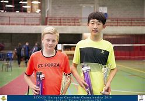
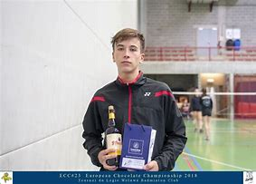

Garnisart Badminton Club
Garnisart Badminton Club c'est environ 170 membres, 50 jeunes et 120 adultes de tous niveaux, depuis les débutants, jouant pour s'amuser, jusqu'aux joueurs de compétition. Chacun peut ainsi trouver des partenaires à son niveau.
Pour les adultes, le club propose 3 séances de jeu libre par semaine (mardi soir, jeudi soir & dimanche matin). Suivant la demande, des entrainements pour adultes débutants et compétiteurs sont également proposés. Mais il n'est pas du tout obligatoire de suivre des entrainements pour commencer.
Pour les jeunes de 6 à 18 ans (15 ans maximum pour les nouvelles inscriptions), des entrainements sont organisés le dimanche matin. Les jeunes qui le désirent peuvent également opter pour le supplément jeu libre, et rejoindre les adultes en semaine.
Garnisart Badminton Club, c'est aussi un tournoi international, chaque année, le dernier week-end de septembre. Depuis 2018, ce tournoi est aussi ouvert aux jeunes.
| Nom de famille | Prénom | Groupe |
|---|---|---|
| Papparotti | Matteo | U7 |
| Christiensen | Andreas | U8 |
| Poulain | Jonathan | U9 |
| Carmeau | Jeanne | U10 |
| Bordo | Frédéric | U11 |
| Boulabane | Bilal | U12 |
| Tran | Kevin | U13 |
| Baudelaire | Jean Charles | U14 |
| Bose | Sanjay | U15 |
| Baudelaire | Antoinette | U16 |
| Kuzekemena | Adrien | U17 |
| Smith | Mariette | U18 |
| Andrew |
 